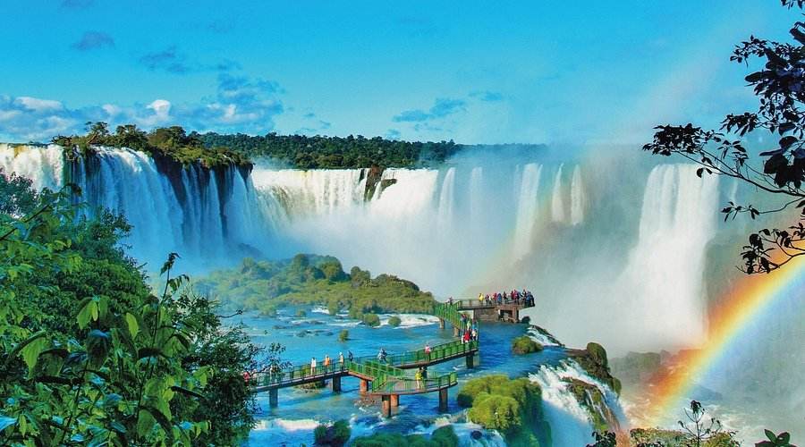

O Cristo Redentor é um dos monumentos mais icônicos do mundo e símbolo do Brasil, eleito como uma das Sete Maravilhas do Mundo Moderno. Localizado no topo do Morro do Corcovado, no Rio de Janeiro – RJ, a 710 metros de altitude, ele se destaca pela imponência de seus 38 metros de altura com os braços abertos, transmitindo uma mensagem de paz, acolhimento e fé. Inaugurado em 1931, o Cristo é não apenas um marco religioso, mas também um patrimônio cultural e histórico que atrai milhões de turistas todos os anos. A partir de sua base, é possível admirar uma das vistas mais bonitas do planeta, abrangendo pontos como a Baía de Guanabara, o Pão de Açúcar, as praias de Copacabana e Ipanema, além do Estádio do Maracanã. A fama do monumento se deve tanto à sua grandiosidade quanto à sua representação simbólica, que tornou o Rio de Janeiro internacionalmente reconhecido como a “Cidade Maravilhosa”. Para aproveitar ao máximo a visita, recomenda-se ir pela manhã ou no final da tarde, quando a iluminação natural valoriza ainda mais a paisagem e permite fotos incríveis. Já em relação à época do ano, os meses de outono e inverno (abril a setembro) são os mais indicados, pois o clima é mais seco e há maior chance de encontrar o céu limpo, ideal para contemplar toda a vista.
As Cataratas do Iguaçu, localizadas em Foz do Iguaçu (PR), formam um dos maiores conjuntos de quedas d’água do mundo e estão entre os destinos turísticos mais impressionantes do Brasil. O parque conta com diversas passarelas que permitem ao visitante se aproximar das quedas e sentir de perto a força da natureza. O volume de água é gigantesco, chegando a mais de 1,5 milhão de litros por segundo em períodos de cheia. Para quem busca aventura, o passeio de barco é uma das atrações mais emocionantes, levando os turistas até a base das quedas. A melhor época para ver as cataratas em sua máxima intensidade é durante o verão e períodos de maior chuva, entre outubro e março, quando o espetáculo das águas fica ainda mais grandioso.
Os Lençóis Maranhenses, localizados em Barreirinhas (MA), são um cenário único formado por imensas dunas de areia branca que abrigam lagoas sazonais de águas cristalinas. Essas lagoas surgem após o período de chuvas, geralmente entre janeiro e junho, enchendo os vales entre as dunas e criando paisagens deslumbrantes. A melhor época para visitar é logo após as chuvas, de junho a agosto, quando as lagoas estão cheias e mais propícias para banho. O parque pode ser explorado por meio de trilhas a pé, que permitem contato direto com a natureza e vistas incríveis do horizonte de dunas. Outra forma muito procurada de conhecer o local é através de passeios em veículos 4x4, que atravessam o terreno arenoso e levam os visitantes até as principais lagoas. Assim, a combinação de aventura e beleza natural faz do destino um dos mais espetaculares do Brasil.

A Chapada Diamantina, localizada no coração da Bahia, é um dos destinos naturais mais impressionantes do Brasil, conhecida por suas paisagens de tirar o fôlego. O parque abriga inúmeras cachoeiras, como a Cachoeira da Fumaça e a Cachoeira do Buracão, que encantam visitantes pela sua beleza e grandiosidade. Seus cânions e vales profundos revelam formações rochosas únicas e rios de águas cristalinas que cortam a região. As trilhas famosas, como a do Vale do Pati, oferecem uma experiência inesquecível para aventureiros e amantes da natureza. Além disso, os mirantes espalhados pelo parque, como o da Serra da Paim e o Morro do Pai Inácio, proporcionam vistas panorâmicas espetaculares. Combinando aventura, ecoturismo e paisagens marcantes, a Chapada Diamantina é um verdadeiro paraíso para exploradores.
Fernando de Noronha, em Pernambuco, é um arquipélago paradisíaco famoso por suas praias preservadas de águas cristalinas e areias douradas. O local é um verdadeiro santuário ecológico, lar de uma rica vida marinha que inclui golfinhos, tartarugas e diversas espécies de peixes coloridos. Para garantir a preservação desse patrimônio natural, existem regras ambientais rigorosas, como o controle do número de visitantes e a cobrança de taxas de preservação. As atividades mais procuradas na ilha são o snorkeling e o mergulho, que permitem explorar os recifes de corais e a incrível biodiversidade submarina. Entre as praias mais famosas estão a Baía do Sancho, considerada uma das mais belas do mundo, e a Praia do Leão. Combinando beleza natural e consciência ambiental, Noronha é um destino inesquecível para os amantes da natureza e do mar.

O Pantanal, localizado principalmente em Mato Grosso e Mato Grosso do Sul, é a maior planície alagável do mundo e um dos melhores lugares para observar a fauna brasileira. A região abriga uma enorme diversidade de animais, como onças-pintadas, araras, jacarés e capivaras, que podem ser avistados em seu habitat natural. O safári fotográfico é uma das atividades mais procuradas, permitindo registrar de perto a vida selvagem. A melhor época para visitar é durante a estação seca, de maio a setembro, quando os animais se concentram nas áreas de água remanescente, facilitando a observação. Além disso, os passeios de barco pelos rios e lagoas revelam cenários incríveis e possibilitam contato direto com a natureza pantaneira.